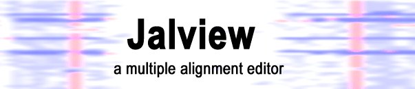

Jalview Documentation
Jalview (2004) is a fast Java multiple alignment editor and analysis tool. It
features many of the functions of AMAS,
for the analysis of sub-families and the prediction of functional sites, but is
fully interactive. (View the Jalview homepage).
If you use Jalview in your work, please cite the bioinformatics paper:
Clamp, M., Cuff, J., Searle, S. M. and Barton, G. J. (2004), "The Jalview
Java Alignment Editor", Bioinformatics, 20, 426-7.